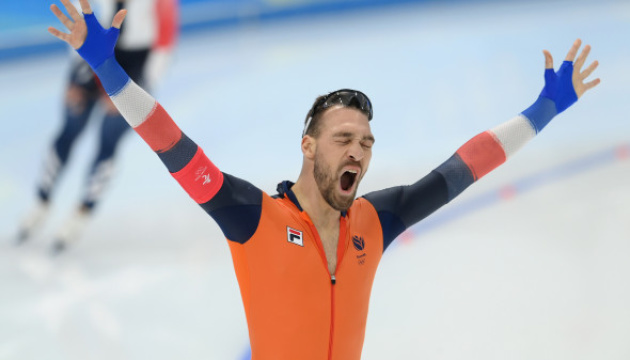

Голландський ковзаняр Нюйс переміг на 1500 м в Пекіні-2022
Чергове «золото» Нідерландів і черговий олімпійський рекорд.
Голландець Кьєлд Нюйс став олімпійським чемпіоном в ковзанярському спорті на дистанції 1500 м в Пекіні-2022, передає Укрінформ.
Нюйс переміг з новим олімпійським рекордом. «Срібло» у іншого ковзаняра з Нідерландів – Томаса Крола, «бронза» у корейця Кім Мін Сока.
Нагадаємо, що Нюйс є олімпійським чемпіоном Пхенчхана-2018 на дистанції 1500 м.
Джерело: Укрінформ
Німкеня Гайзенбергер – чемпіонка Олімпіади-2022 з санного спорту
Українки Стецьків і Туницька не потрапили в ТОП-20.
Німкеня Наталі Гайзенбергер стала чемпіонкою зимової Олімпіади-2022 в Пекіні з санного спорту, передає Укрінформ.
За сумою чотирьох спроб Гайзенбергер набрала найбільшу суму балів і випередила усіх конкуренток. Срібна медаль у Анни Беррейтер з Німеччини, бронзова – у Тетяни Іванової з ОКР.
34-річна Гайзенбергер стала триразовою олімпійською чемпіонкою.
Обидві українки – Олена Стецьків і Юліанна Туницька завершили змагання після третього заїзду і не пробилися у фінальну спробу. За сумою трьох спроб Туницька посіла 21 місце, а Стецьків – 22.
Як передавав Укрінформ, нашу країну у Пекіні-2022 представлятимуть 45 спортсменів, які змагатимуться у 12-ти видах спорту. Українці не виступлять лише у хокеї, керлінгу та ковзанярському спорті. Олімпіада-2022 пройде з 4 до 20 лютого.
Джерело: Укрінформ
Керлінг: Італія виграла «золото» Пекіна-2022 у міксті
Збірна Італії з керлінгу перемогла Норвегію у фінальному матчі олімпійського турніру змішаних пар зимніх Ігор-2022.
Стефанні Константіні і Амос Мозанер перемогли Крістін Скаслієн і Магнуса Недреготтена з рахунком 8:5 (0:2, 2:0, 1:0, 3:0, 0:1, 1:0, 0:2, 1:0), передає Укрінформ.
Раніше збірна Швеції (Альміда де Валь і Оскар Ерікссон) здобула «бронзу», перемігши Дженніфер Доддс та Брюса Моуета з Великої Британії - 9:3 (0:1, 4:0, 3:0, 1:0, 1:0, 0:2 ).
Як повідомляв Укрінформ, за нашу країну в Пекіні-2022 виступають 45 спортсменів, які змагаються у 12-ти видах спорту.
Джерело: Укрінформ
Дмитро Підручний: Лижі їхали класно, а під час стрільби були помилки
В олімпійському Пекіні біатлоністи розіграли медалі в індивідуальній гонці серед чоловіків. Найкращий результат серед українців показав Дмитро Підручний, який фінішував 18-м.
Спортсмен зазначив, що у цілому гонка склалася непогано, передає Укрінформ.
«Сьогоднішня гонка склалася для мене непогано. Однак ця траса важка для моєї спини. Відчувалася втома. Якщо не враховувати цю проблему, то можу сказати, що трасою йшов добре. Лижі їхали класно, за що велика вдячність нашим сервісменам і всій команді. Шкода, що під час стрільбі були помилки. Я намагався не спішити, добре стріляти, але десь не пощастило», - сказав Дмитро після гонки, додавши також, що команда дуже чекає на повернення старшого тренера чоловічої збірної Юрая Санітри, який продовжує перебувати на ізоляції.
Олімпійські змагання з біатлону продовжаться 11 лютого спринтом у жінок.
Джерело: Укрінформ
Біатлон: Фійон-Має виграв індивідуальну гонку Пекіна, Підручний - 18-й
Французький біатлоніст Кентен Фійон-Має здобув у вівторок перемогу в індивідуальній гонці на 20 км Олімпійських ігор у Пекіні.
29-річний спортсмен показав час 48 хвилин 47,4 секунди і припустився 2 промахів на вогневих рубежах олімпійського стадіону в Чжанцзякоу, передає Укрінформ.
Срібна медаль у білоруса Антона Смольського (14,8 секунди відставання; 0 промахів), бронзова - у норвежця Йоганнеса Бьо (+31,1; 2).
За збірну України виступили четверо біатлоністів. Накращий результат з них показав Дмитро Підручний, який фініщував 18-м (+3.01,9; 3), Артем Прима прийшов 37-м, Антон Дудченко - 50-м та Богдан Цимбал - 55-м.
Загалом в індивідуальній гонці стартували 92 учасники.
Джерело: Укрінформ